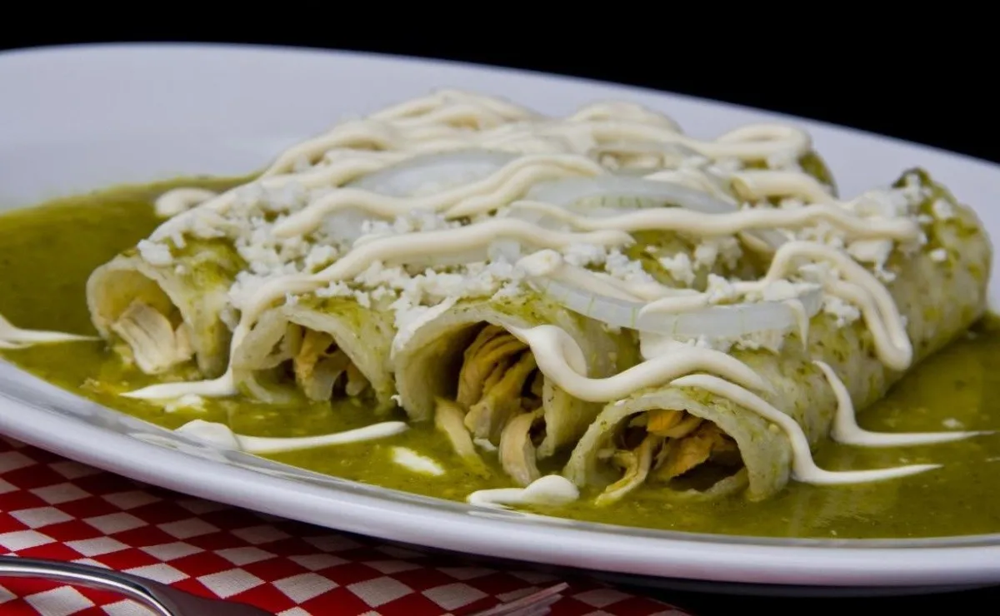

<< Return Home
Enchiladas

Description
Enchiladas are a very common dish in Mexico. Using chicken broth as a base, Enchiladas are, essentially, tacos with a sauce on the top of it. As simplistic as it sounds, Enchiladas are a complete meal and a pretty good recipe if you happen to like spicy meals... but is not like it is extremely spicy though so don't worry!
This meal should be enough to 4-5 people.
Ingredients
- 1 chicken breast (cut by the half and without skin is suggested).
- 1 onion.
- 1 garlic.
- 1 kg of green tomatoes.
- Salt.
- Water.
- Vegetal oil
- Chicken broth powder
- 2 Serrano peppers.
- Acid cream
- Corn tortillas.
- Panela cheese.
Steps
- Into a pressure cooker put the chicken broth, a garlic clove, and half the onion.
- Add 1 and a half tablespoons of salt an pour water so the water level is about 3/4 of the pressure cooker capacity.
- Close the cooker and put in on the stove. Let it cook so the preassure valve starts making sounds.
- When the pressure cook starts making sounds, let it cook for another five minutes.
- Let it get a bit cold so the security lock opens.
- Wash the green tomatoes and put them into a blender along a garlic clove, half an onion and two serrano peppers.
- Pour into the blender part of the chicken broth from the pressure cook (using a strainer is adviced).
- Blend the mix.
- Into a stew pot, pour some vegetal oil and heat it up on the stove for 1 minute.
- Pour the blended mix into the stew pot.
- Add a cube of chicken broth powder into the stew pot. Mix it constantly so the powder disolves.
- Give a taste of this sauce and add water, chicken broth from the pressure cooker or salt as you like.
- Leave it in the heat of the stove until the sauce starts to boil. Then, leave it some minutes but don't leave it reduce the volume too much.
- Take out the chicken breast from the pressure cook and crumble it.
- Inside a frying pan, pour some vegetal oil, fry some tortillas, with out leaving them become rigid.
- In each tortilla put some crumbled chicken and then roll it so it makes a taco.
- Pour some sauce over the tacos.
- You can add acid cream, panela cheese or onion slices as you like.
- Enjoy!